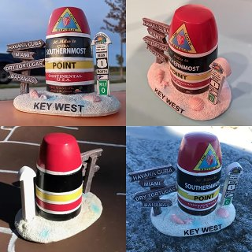

|
Yixuan Yang Hi there! My name is Yixuan Yang (杨翊玄, pronounced 'Yee-shwen Yang'). I am currently a Ph.D. candidate at DCS, University of Warwick, UK, supervised by Prof. Victor Sanchez and Prof. Feng Zheng (SUSTech, China). I received my Master degree in Computer Science from School of Computer Science and Engineering, The Chinese University of Hong Kong (CUHK) in 2020. Previously, I obtained my Bachelor's degree in the School of Computer Science in 2019 at Northwest University, Xi'an, China. Now, I am an intern at Shanghai AI lab, working on 3D scene generation and 3D reconstruction. Besides, I am also a photography enthusiast, and I share some of my photography works at the bottom of this webpage. Also, I am a loyal Liverpool FC fan. Email / Github / Photography |
|
News2025.6: One paper about 3D scene generation with LLMs is accepted by IROS 2025! 2025.3: One paper about unpaired point cloud completion is accepted by IEEE TMM! 2024.11: One paper about video anomaly detection is accepted by IEEE TIP! 2024.11: I'm excited to join Shanghai AI Lab as a research intern, focusing on 3D scene generation and reconstruction! |
ResearchMy research interests include 3D computer vision, 3D generation and 3D perception. And now I am working on 3D scene generation with LLMs and 3D reconstruction for the transparent and reflective objects. |

|
LLplace: The 3D Indoor Scene Layout Generation and Editing via Large Language Model
Yixuan Yang, Junru Lu, Zixiang Zhao, Zhen Luo, Wanxi Dong, Victor Sanchez, Feng Zheng 2025 IEEE International Conference on Intelligent Robots and Systems (IROS 2025) paper We use LLMs to generate and edit the 3D indoor scene layout. |
|
RefComp: A Reference-guided Unified Framework for Unpaired Point Cloud Completion
Yixuan Yang, Jinyu Yang, Zixiang Zhao, Victor Sanchez, Feng Zheng IEEE Transactions on Multimedia (TMM) paper We apply the reference-guided generation to guide the unpaired point cloud completion. |
|

|
Bolt3D: Generating 3D Scenes in Seconds
Stanislaw Szymanowicz, Jason Y. Zhang, Pratul Srinivasan, Ruiqi Gao, Arthur Brussee, Aleksander Holynski, Ricardo Martin-Brualla, Jonathan T. Barron, Philipp Henzler arXiv, 2025 project page / arXiv By training a latent diffusion model to directly output 3D Gaussians we enable fast (~6 seconds on a single GPU) feed-forward 3D scene generation. |
|
|
CAT4D: Create Anything in 4D with Multi-View Video Diffusion Models
Rundi Wu, Ruiqi Gao, Ben Poole, Alex Trevithick, Changxi Zheng, Jonathan T. Barron, Aleksander Holynski CVPR, 2025 (Oral Presentation) project page / arXiv An approach for turning a video into a 4D radiance field that can be rendered in real-time. When combined with a text-to-video model, this enables text-to-4D. |
|

|
Generative Multiview Relighting for
3D Reconstruction under Extreme Illumination Variation
Hadi Alzayer, Philipp Henzler, Jonathan T. Barron, Jia-Bin Huang, Pratul P. Srinivasan, Dor Verbin CVPR, 2025 (Highlight) project page / arXiv Images taken under extreme illumination variation can be made consistent with diffusion, and this enables high-quality 3D reconstruction. |

|
Blind Date: Using Proper Motions to Determine the Ages of Historical Images
Jonathan T. Barron, David W. Hogg, Dustin Lang, Sam Roweis The Astronomical Journal, 136, 2008 Using the relative motions of stars we can accurately estimate the date of origin of historical astronomical images. |

|
Cleaning the USNO-B Catalog Through Automatic Detection of Optical Artifacts
Jonathan T. Barron, Christopher Stumm, David W. Hogg, Dustin Lang, Sam Roweis The Astronomical Journal, 135, 2008 We use computer vision techniques to identify and remove diffraction spikes and reflection halos in the USNO-B Catalog. In use at Astrometry.net |
Miscellanea |
|
This page source code is from jonbarron. |